로봇 제어 기초 · 개념 공부 덱
계획한 궤적을
실제로 따라가게 한다
PID와 경로 추종에서 LQR·MPC, 샘플 기반 MPPI, 모델 오차와 적응, 안전 필터까지 — 그림과 배경지식과 장단점으로 보는 제어
PID · Pure pursuit
LQR · MPC
MPPI
지연 · 학습 동역학 · GP
CBF · CVaR · 보정
순서
피드백에서 출발해 최적화와 안전으로 넓혀 간다
| 장 | 주제 | 답하는 질문 |
|---|---|---|
| 0 | 시작 | 제어기는 무엇을 받아 무엇을 내나? 피드백은 왜 필요한가? |
| 1 | 고전 피드백과 경로 추종 | P·I·D는 각각 무엇을 고치나? 경로는 어떻게 따라가나? |
| 2 | 최적 제어와 MPC | 미래를 예측해 제약을 지키며 고르려면? |
| 3 | 샘플 기반 MPC: MPPI | 미분 없이, non-smooth 비용으로 최적화하려면? |
| 4 | 모델 오차와 적응 | 지연·슬립처럼 모델이 틀릴 때는? |
| 5 | 안전 | 사람과 장애물 앞에서 명령을 어떻게 지키나? |
| 6 | 정리 | 무엇을 언제 쓰고, 무엇부터 공부하나? |
0 · 커리큘럼 3/7
계획의 경로를 받아 모델 오차 속에서 따라간다
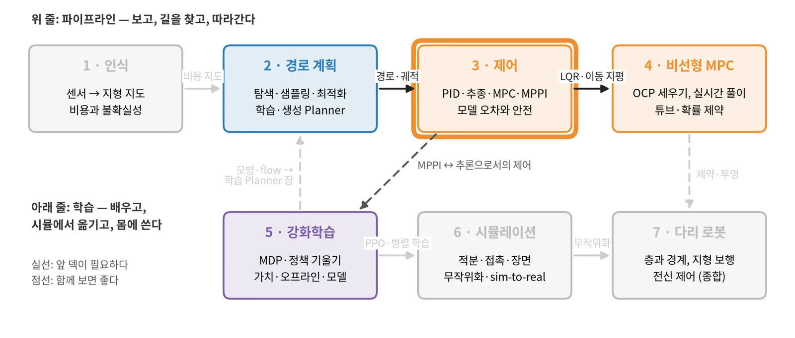
2 경로 계획의 경로·궤적. 1 인식의 분산 σ와 사람 추적(안전 장). 상태공간 모델의 기초.
2장의 LQR·receding horizon → 4 비선형 MPC에서 깊게. 4장의 잔차·GP → 4 MPC 3장.
MPPI의 가중 평균은 5 강화학습 4장의 control as inference와 같은 식이다. 지연 → 6 시뮬레이션의 지연 모델.
0 · 배경지식
네 가지 배경지식이면 이 덱을 따라올 수 있다
\(x_{t+1} = f(x_t, u_t)\)
상태 x(위치, 속도, 방향)와 입력 u(명령)로 다음 상태를 정한다. 선형이면 \(Ax + Bu\).
잰 상태로 명령을 고친다
모델이 틀려도, 외란이 와도 오차를 보고 바로잡는다. open loop는 처음 계획만 믿는다.
작은 흔들림이 사라지는가
오차가 시간이 지나며 0으로 줄면 안정, 커지면 불안정. 이득이 크거나 지연이 크면 불안정해진다.
제어기는 주기마다 한 번 계산한다
주기 Δt 동안 명령은 일정하다. 계산 시간과 통신이 지연을 만든다.
0 · 피드백 루프
제어기는 목표와 잰 상태의 차이로 명령을 낸다
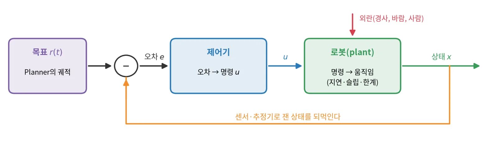
Planner는 경로·궤적을 내고, 제어기는 그것을 따라가며 짧은 시간의 오차와 외란을 흡수한다.
로봇의 모델(얼마나 정확한가), 제약(속도·가속·조향 한계), 비용(무엇을 더 싫어하나).
추종 오차, 진동·떨림(jerk), 한계 위반, 계산 시간.
1 · 고전 피드백과 경로 추종
모델을 거의 몰라도
오차만 보고 고친다
PID는 지금·과거·변화의 오차를 더하고, pure pursuit는 앞의 한 점을 향해 원을 그린다.
1 · PID
P는 지금의 오차를, I는 쌓인 오차를, D는 오차의 변화를 고친다
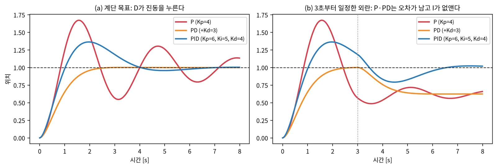
크면 빠르지만 출렁인다. 외란이 있으면 오차가 남는다.
남은 오차를 없앤다. 크면 느리게 출렁이고 포화 때 쌓인다(windup).
감쇠(damping)를 준다. 잡음을 키우므로 필터를 거쳐 쓴다.
1 · 경로 추종
pure pursuit는 경로 위 앞쪽 한 점을 지나는 원호를 따라간다
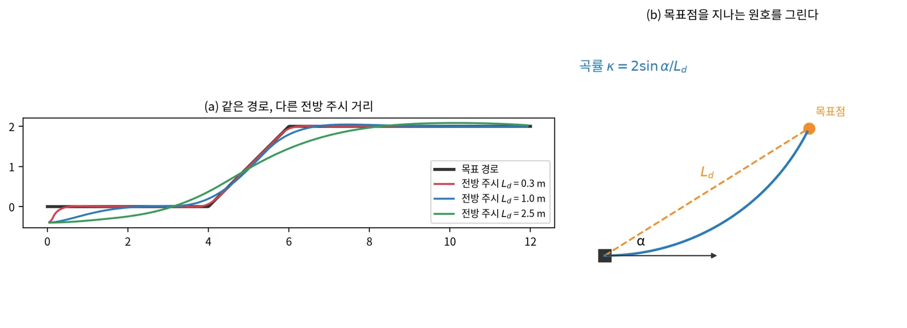
식 한 줄, 튜닝 파라미터 하나(L_d). 차·바퀴 로봇에서 강건하다. 속도에 비례해 L_d를 키우면 고속에서도 안정적이다.
모서리를 깎는다. 장애물·제약을 모른다. 짧은 L_d는 고속·지연에서 출렁인다.
Coulter, Implementation of the Pure Pursuit Path Tracking Algorithm, CMU-RI-TR-92-01 (1992)
1 · 장단점
고전 추종기는 단순하고 강건하지만 제약과 미래를 모른다
| 방법 | 보는 것 | 장점 | 단점 |
|---|---|---|---|
| PID | 한 축의 오차 | 모델 불필요, 어디서나 | 다변수·제약을 직접 못 다룬다 |
| Pure pursuit | 앞쪽 한 점 | 기하만으로, 강건 | 모서리 깎기, 장애물 모름 |
| Stanley | 앞바퀴의 횡·방향 오차 | 저속에서 정확 | 고속·후진에 약하다 |
| LQR(2장) | 선형 모델 + 이차 비용 | 다변수 최적 이득 | 제약을 못 건다 |
| MPC(2장) | 모델로 예측한 미래 | 제약·미래를 직접 | 계산이 무겁다 |
핵심: 미래를 내다볼수록, 제약을 직접 걸수록 계산과 모델이 더 든다.
2 · 최적 제어와 MPC
모델로 미래를 시뮬레이션해 보고
가장 좋은 명령열을 고른다
LQR은 닫힌 꼴의 이득을, MPC는 매 주기 제약 있는 최적화를 푼다.
2 · LQR
선형 모델과 이차 비용이면 최적 제어는 상태의 선형 피드백이다
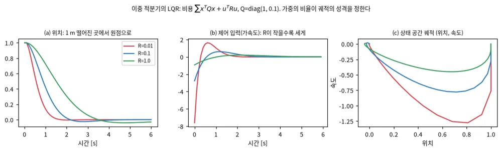
Riccati 식으로 K를 미리 계산하면 실행은 행렬 곱 하나. 다변수를 한꺼번에, 안정성도 보장된다.
입력 포화·장애물 같은 제약을 못 건다. 비선형 로봇은 기준 궤적 주변에서 선형화해야 한다.
2 · 모델 예측 제어
MPC는 매 주기 짧은 미래를 최적화하고 첫 명령만 실행한다
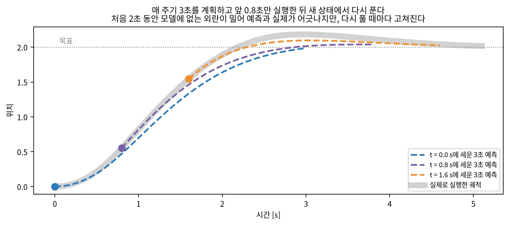
2 · MPC의 종류
모델과 제약의 꼴이 솔버를 정한다
| 종류 | 모델·제약 | 풀이 | 특징 |
|---|---|---|---|
| 선형 MPC | 선형 모델, 볼록 제약 | QP(OSQP, qpOASES) | 전역 최적, 밀리초 이하 |
| 비선형 MPC(NMPC) | 비선형 모델 | SQP·RTI(acados, CasADi) | 국소 최적, 초기값 중요 |
| 튜브·강건 MPC | 외란 집합 | 명목 MPC + 보조 피드백 | 외란 아래 제약 보장 |
| 확률 MPC | 불확실한 모델 | 확률 제약 \(P(x \in \mathcal X) \ge 1 - \delta\) | 불확실성 추정이 맞아야 한다 |
| 샘플 기반(MPPI, CEM) | 아무 모델·비용 | 샘플을 rollout해 가중 평균 | 미분 불필요, 3장 |
반드시 지킨다. 풀 수 없으면(infeasible) 해가 없다.
어기면 큰 페널티. 늘 해가 있지만 위반이 가능하다.
2 · 장단점
MPC는 제약과 미래를 얻는 대신 모델과 계산을 요구한다
- 속도·가속·조향 한계를 문제 안에서 지킨다
- 미래를 보고 미리 감속·회전한다
- 여러 목표(추종, 매끄러움, 에너지)를 비용으로 섞는다
- receding horizon이라 모델 오차가 피드백으로 보정된다
- 모델이 틀린 만큼 예측이 틀린다
- 비선형·비볼록이면 국소 최적, 시간 안에 못 풀 수도
- 장애물처럼 non-smooth 비용은 gradient가 없다
- 튜닝 항목(horizon, 가중치, 제약)이 많다
다음 장: 비용이 매끄럽지 않고 gradient가 없을 때는 샘플을 rollout하는 MPPI가 대안이 된다.
3 · 샘플 기반 MPC: MPPI
명령열을 수백 개 rollout해 보고
비용이 낮을수록 큰 가중치를 준다
gradient가 필요 없어 장애물처럼 계단 같은 비용도 그대로 쓴다.
3 · MPPI
비용이 낮은 rollout일수록 지수적으로 큰 가중치를 받는다
① 섭동
현재 명령열에 잡음 \(\epsilon_k\)를 K개
→
② rollout
모델로 horizon 끝까지, 비용 \(S_k\)
→
③ 가중 평균
\(w_k\)로 잡음을 가중 평균
- K는 보통 수백–수천, GPU에서 한꺼번에 rollout한다
- 첫 명령을 실행하고 명령열을 한 스텝 밀어 다음 주기의 시작값으로

Williams 외, MPPI arXiv:1509.01149 (2015) · Information-theoretic MPC arXiv:1707.02342, T-RO 2018
3 · MPPI · 시연
MPPI는 GPU로 rollout한 명령열 후보의 가중 평균으로 흙길을 공격적으로 달린다
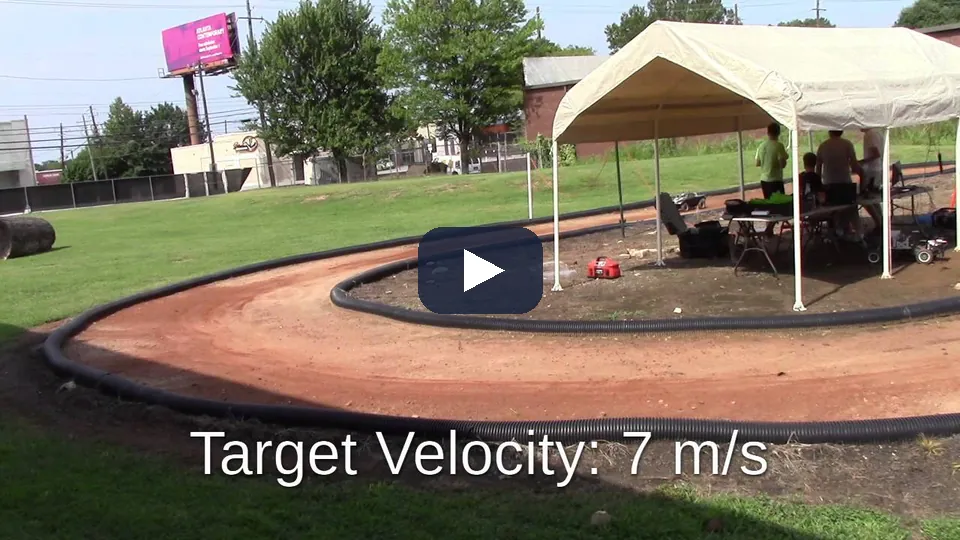
앞 장의 ①–③이 매 주기 반복된다. 명령열 후보 수천 개를 GPU로 동시에 rollout하고, 비용의 지수 가중으로 평균한 명령열의 첫 명령만 실행한다.
흙길처럼 모델이 틀리거나 외란이 크면 샘플 전체가 나쁜 영역으로 밀린다. 계보의 Tube-MPPI·Robust MPPI가 이 문제를 다룬다.
Williams 외, MPPI arXiv:1509.01149 (2015) · 정보이론적 MPC arXiv:1707.02342, T-RO 2018 · 영상: GT AutoRally 채널(ICRA 2016 투고 영상)
3 · 온도 λ
온도는 몇 개의 샘플을 믿을지 정한다
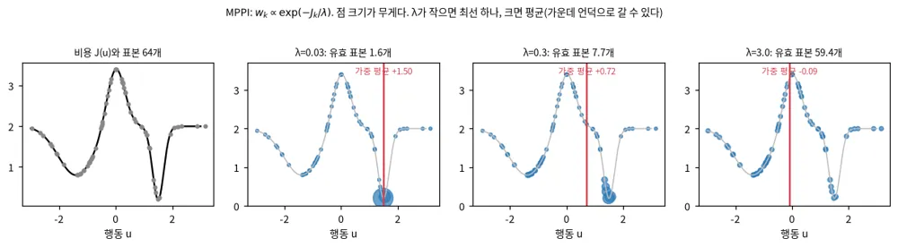
가장 좋은 샘플 하나에 몰린다. 빠르게 좋은 곳으로 가지만 잡음에 휘둘려 명령이 튄다.
모든 샘플의 평균에 가깝다. 매끄럽지만 두 골짜기 사이 언덕(장애물)으로 갈 수 있다.
주의: 온도는 비용의 크기와 함께 움직인다. 비용 항을 10배로 키우면 온도를 10분의 1로 줄인 것과 같다.
3 · 잡음의 모양
잡음을 어디에 넣느냐가 명령의 매끄러움을 정한다
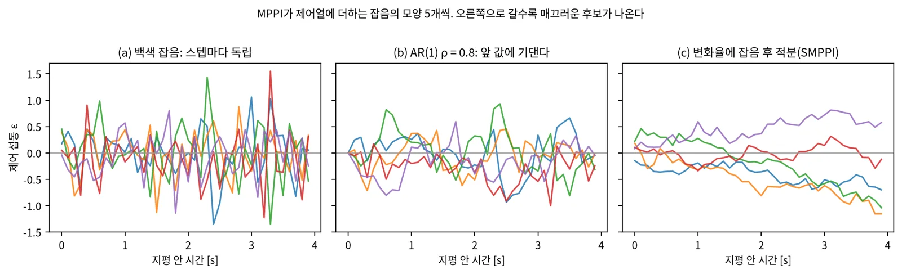
| 잡음 | 장점 | 단점 |
|---|---|---|
| 백색(독립) | 탐색 범위가 넓다, 유도가 단순 | 평균한 명령도 떨린다(jerk) |
| 시간 상관(AR(1), 유색 잡음) | 후보가 그럴듯한 모양 | 상관 계수 튜닝 |
| 변화율 공간(SMPPI) | 매끄러운 명령, 기계에 무리 없음 | 급한 회피 반응이 느릴 수 있다 |
Kim 외, Smooth Model Predictive Path Integral Control without Smoothing, arXiv:2112.09988, RA-L 2022
3 · 잡음의 모양 · 시연
잡음을 변화율에 넣으면 비용을 튜닝하지 않아도 명령이 매끄럽다
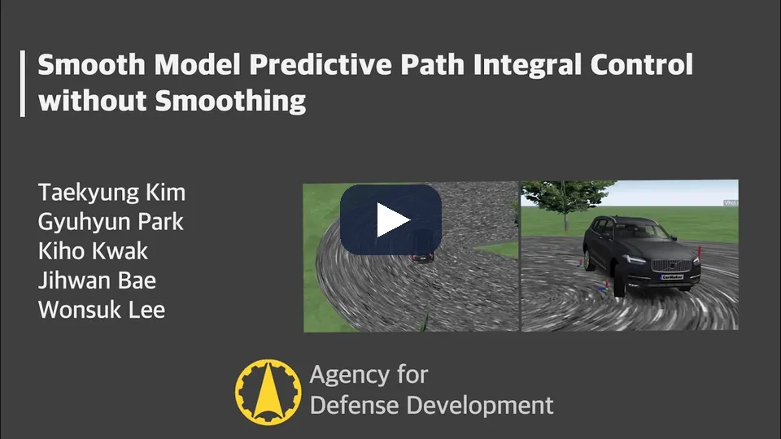
표준 MPPI는 스텝마다 독립인 잡음을 제어값에 바로 더해 제어열이 떨린다. SMPPI는 잡음을 변화율에 더하고 적분한다. 랜덤 워크가 개별 잡음보다 매끄러운 것과 같은 원리다.
MPPI의 정보이론적 유도가 유지된다. 비용 항을 튜닝하지 않고도 구조적으로 매끄러운 제어를 얻는다.
Kim 외, Smooth Model Predictive Path Integral Control without Smoothing, arXiv:2112.09988, RA-L 2022
3 · 계보
십 년 동안 바뀐 것은 가중 평균이 아니라 샘플 분포와 구현이다
| 연도 | 이름 | 바꾼 것 |
|---|---|---|
| 2015–2018 | MPPI, 정보이론적 MPC | 경로 적분 제어를 GPU 샘플 기반 MPC로, KL 유도로 일반화 |
| 2018–2021 | Tube-MPPI, Robust MPPI | 명목 상태와 실제 상태를 나누고 추종 제어기를 더한다 |
| 2022 | log-MPPI | 정규 × 로그정규 분포에서 샘플링해 실행 가능한 궤적을 늘린다 |
| 2022 | SMPPI | 잡음을 변화율에 넣어 매끄럽게 |
| 2022–2023 | Nav2 MPPI Controller | ROS 2 표준 스택의 CPU 구현 |
| 2024 | MPPI-Generic | C++/CUDA 템플릿, 샘플 128개에 약 0.15 ms(RTX 3080) |
| 2024–2025 | DIAL-MPC | 반복마다 잡음을 줄이는 diffusion식 annealing(4족 관절 토크) |
| 2025–2026 | Feedback-MPPI, CLIS-MPPI | rollout에서 피드백 이득을 얻어 풀이 사이와 지연을 메운다 |
RMPPI arXiv:2102.09027 · log-MPPI arXiv:2203.16599 · MPPI-Generic arXiv:2409.07563 · Feedback-MPPI arXiv:2506.14855 · CLIS-MPPI arXiv:2610.21239
3 · 계보 · 시연
샘플 기반 MPC는 annealing으로 샘플 분포를 좁혀 다리 로봇의 관절 토크까지 낸다
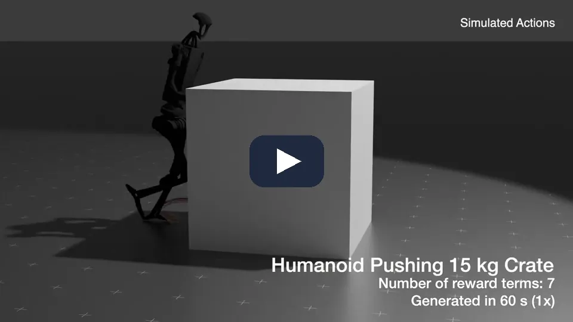
가중 평균은 그대로 두고 두 겹의 annealing을 더했다. 반복마다 잡음을 줄이고, horizon 위치마다 잡음을 달리한다. 학습 없이 실물 Go2의 속도 추종과 7 kg 짐을 진 점프를 해낸다.
입력이 관절 토크라 차원이 크다. 십 년 동안 바뀐 것은 가중 평균이 아니라 샘플을 어디서 어떻게 뽑느냐다(앞 장).
DIAL-MPC, Xue 외(CMU), ICRA 2025 — arXiv:2409.15610
3 · 학습 prior 넣기
학습한 prior는 샘플의 중심이 아니라 비용으로 넣는다
- 워밍스타트(왼쪽)는 매번 샘플 중심을 prior로 되돌린다. 최적화기가 쌓은 보정을 버린다.
- ProxPI(오른쪽)는 이전 해를 중심으로 샘플링하고 prior는 proximal 비용으로만 둔다.
- prior가 틀려도 다른 비용 항이 해를 바로잡는다.

핵심: 학습 Planner나 정책의 출력을 샘플 기반 제어기에 넣을 때, "믿는 정도"를 비용 가중치 α로 조절할 수 있다.
ProxPI, arXiv:2609.00941
3 · 장단점
MPPI는 미분을 버린 대신 샘플 수와 온도에 기댄다
| gradient 기반 MPC(NMPC) | 샘플 기반 MPC(MPPI) | |
|---|---|---|
| 비용·모델 | 매끄럽고 미분 가능해야 | 아무거나(계단, 충돌 판정, 시뮬레이터) |
| 제약 | hard 제약을 형식적으로 | 페널티·확률 제약으로 근사 |
| 최적성 | 국소 최적(빠르게 수렴) | 샘플 범위 안의 근사 최적 |
| 계산 | 순차, 작은 문제에 빠름 | 완전 병렬, GPU에 잘 맞음 |
| 차원 | 긴 horizon·많은 입력도 | 입력 차원이 크면 샘플이 많이 든다 |
| 튜닝 | 가중치, 초기값 | 샘플 수, 온도, 잡음 공분산 |
실무: 비용이 매끄럽지 않으면 MPPI, hard 제약과 정밀함이 중요하면 NMPC. 둘을 같은 벤치마크에서 견주는 것이 가장 확실하다.
4 · 모델 오차와 적응
제어기가 믿는 모델이 틀리면
최적화는 엉뚱한 곳을 최적화한다
지연, 슬립, 하중처럼 모델이 놓친 것을 넣고, 배우고, 실시간으로 맞춘다.
4 · 지연
지연이 있으면 같은 이득도 출렁이고, 지연을 모델에 넣으면 안정된다
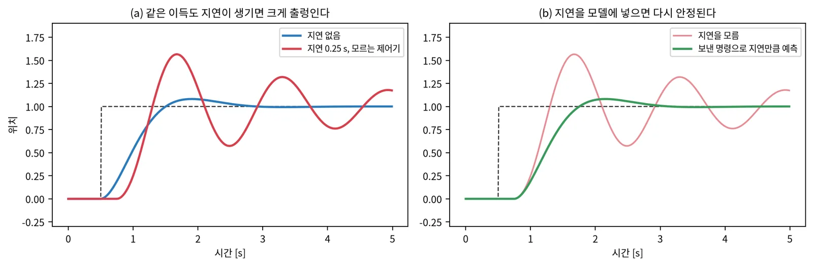
계산 시간, 통신, 모터 드라이버, 바퀴 조향처럼 1차 지연을 가진 액추에이터.
예측 모델에 지연을 넣는다(이미 보낸 명령으로 앞을 내다본다).
이득을 낮춘다. 안정은 되지만 느려진다.
4 · 샘플 기반 제어의 지연
지연은 rollout의 출발점 문제로 바꿀 수 있다
지연을 초기 상태 분포로 두고 rollout마다 시작점을 섭동한다. 가중 rollout의 회귀로 피드백 이득을 얻는다. UR5e 실물 5회에서 MPPI는 2번 충돌, CLIS-MPPI는 0번.
rollout을 자동 미분해 국소 이득을 얻는다. 쿼드로터 실물 x RMSE 0.048 m → 0.017 m. 이득 계산이 실행 시간을 40–70% 늘린다.
비용이 계단 같아 gradient가 거의 없으면 회귀 이득(CLIS), 매끄러우면 미분 이득.


CLIS-MPPI arXiv:2610.21239, CDC 2026 · Feedback-MPPI arXiv:2506.14855, RA-L 2026
4 · 학습 동역학
제어기 구조는 그대로 두고 rollout 모델만 학습 모델로 바꾼다
| 연도 | 이름 | 핵심 |
|---|---|---|
| 2018 | PETS | 확률 신경망 앙상블 동역학 + 궤적 샘플링 계획. half-cheetah에서 SAC보다 8배 적은 샘플 |
| 2021 | IKD | IMU를 넣은 inverse kinodynamic 모델로 고속 오프로드 추종. 성공률 52.4% → 86.9% |
| 2021 | RMA | 환경 요인을 latent 벡터로, 배포 때는 이력에서 추정 |
| 2023 | 지형 인지 kinodynamic 모델 | 6자유도 운동 예측 + MPPI로 위험한 궤적에 페널티 |
| 2023 | TD-MPC2 | 디코더 없는 latent world model 안에서 MPPI |

PETS arXiv:1805.12114 · IKD arXiv:2102.12667 · RMA arXiv:2107.04034 · 지형 인지 arXiv:2305.00676 · TD-MPC2 arXiv:2310.16828
4 · 학습 동역학 · 시연
IMU로 배운 inverse kinodynamic 모델이 고속 오프로드에서 계획대로 움직이게 한다
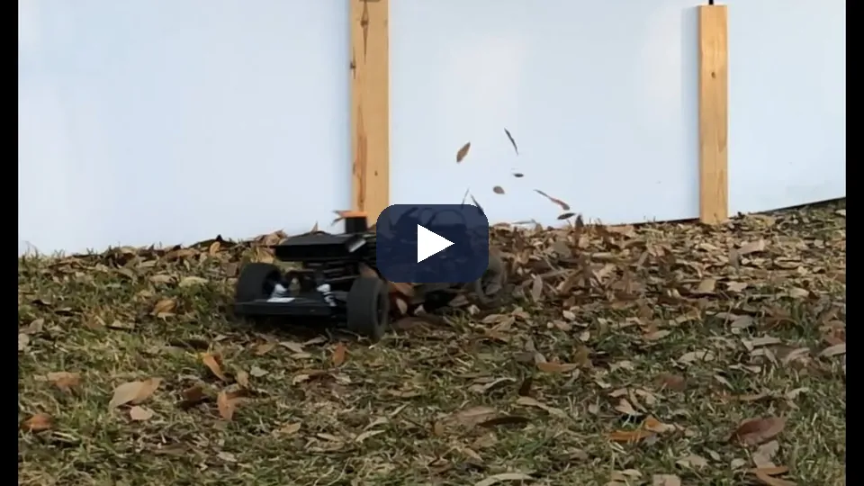
원하는 속도·곡률과 최근 IMU 관측을 넣으면 그 변화를 실제로 만드는 제어 입력을 낸다. 자갈 같은 지형이 고속에서 언더스티어를 만드는 효과를 IMU가 보여 주기 때문이다.
실외 트랙에서 계획 실행 성공률 52.4% → 86.9%. 보지 못한 실내 바닥에서도 효과가 유지됐다.
IKD arXiv:2102.12667, RA-L 2021 (UT Austin)
4 · 잔차와 context
물리 모델 위에 작은 학습 잔차를 얹고, 짧은 이력으로 조건을 전달한다
강체 물리 + TCN 잔차. 힘 예측 오차 0.982 N → 0.491 N, Jetson TX2에서 약 180 Hz.
0.4초 이력의 12차원 latent로 잔차를 조건화, replay 버퍼로 기억.
약 5초 이력을 context 토큰 하나로. 6 m/s 추종 오차가 기준 대비 42–57% 작다.

HDVIO2.0 arXiv:2504.00969 · Continual VND arXiv:2606.27353 · OptCar arXiv:2607.13319
4 · 배경지식 · 가우시안 프로세스
GP는 잔차의 평균과 함께 "얼마나 모르는지"를 낸다

적은 데이터로 비선형을 맞춘다. σ를 확률 제약·튜브의 폭으로 쓸 수 있다.
계산이 데이터 수의 세제곱. 커널 선택에 결과가 달렸다. 대부분이 선형이면 선형 회귀로 충분하다.
McKinnon·Schoellig, Learn Fast, Forget Slow, arXiv:1810.06681 — 900 kg 지상 로봇 3 km 실측에서 가중 베이즈 선형회귀가 GP보다 정확했다
4 · 강연 · 배운 모델 위의 보장
배운 모델 위에서 보장을 만드는 길은 세 갈래다
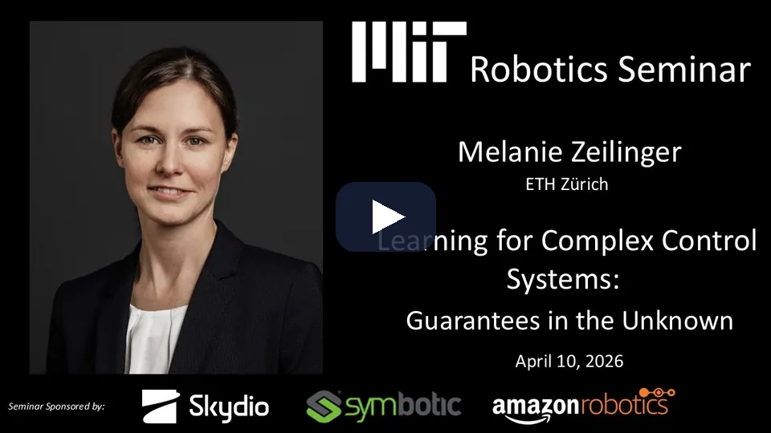
기록한 데이터로 예측 모델을 자동 개선한다. 이 장의 학습 동역학·잔차·GP가 여기다.
폐루프 성능이 가장 좋은 비용·제약을 데이터에서 추론한다.
MPC로 학습 제어기에 제약 만족을 덧붙인다. 5장의 예측 안전 필터가 여기다.
Hewing·Wabersich·Menner·Zeilinger, Annual Review of Control, Robotics, and Autonomous Systems 3:269–296 (2020) · Cautious MPC arXiv:1705.10702 · PCBF arXiv:2105.10241
4 · 적응
숨은 조건은 학습 때 privileged 정보로 배우고, 배포 때 이력에서 추정한다

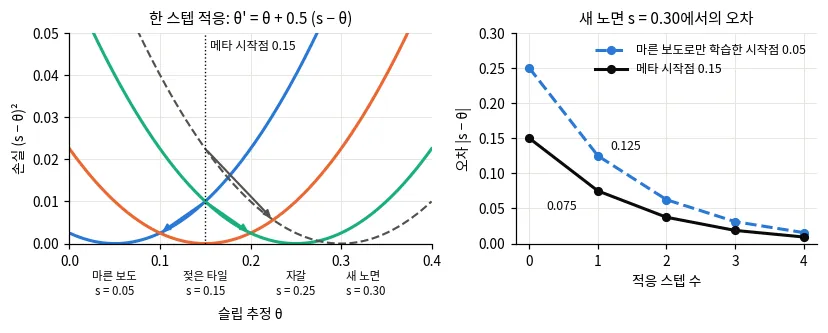
| 방식 | 배포 때 바뀌는 것 | 장점 | 단점 |
|---|---|---|---|
| 이력 → latent(RMA, OptCar) | latent 벡터 | 빠르고 안정적 | 학습 때 본 조건 범위 안에서만 |
| 온라인 회귀(RLS, FE-RLS) | 몇 개의 계수 | 수 초 만에 적응 | 기저가 맞아야 한다 |
| 메타학습(MAML) | 가중치(몇 스텝 갱신) | 새 조건에 빠르게 | 학습이 까다롭다 |
4 · 적응 · 시연
시뮬레이션에서만 배운 RMA가 보지 못한 노면에 1초 안쪽으로 적응한다
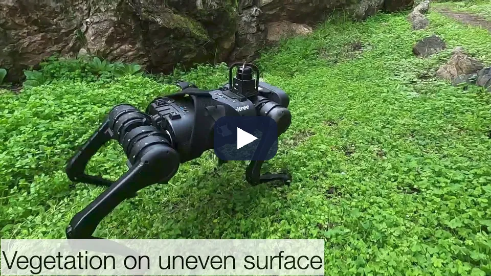
노면이 바뀌어도 걸음이 이어지는지. 적응 모듈은 최근 상태·행동 이력만으로 latent(extrinsics)를 추정하고 10 Hz로 돈다. 기본 정책은 100 Hz다.
학습 때 본 조건 범위 안에서만 적응한다(앞 장 표). 보지 못한 조건은 세 방식 모두의 공통 위험이다.
RMA arXiv:2107.04034, RSS 2021 (UC Berkeley·CMU)
4 · 장단점
모델 오차를 다루는 법은 "얼마나 배우느냐"에 따라 단계가 나뉜다
| 방법 | 장점 | 단점 |
|---|---|---|
| 물리 모델 + 지연·슬립 계수 | 해석 쉽고 데이터가 거의 필요 없다 | 식에 없는 효과는 못 잡는다 |
| 온라인 계수 추정(RLS) | 실시간 적응, 가볍다 | 기저 선택에 제한된다 |
| 잔차 학습(신경망) | 비선형 효과를 배운다 | 데이터 분포 밖에서 틀린다 |
| 잔차 GP | σ로 모르는 곳을 표시 | 계산·커널 선택 |
| 전체 학습 모델 | 가장 표현력이 크다 | 데이터가 많이 들고 Planner가 오차를 이용 |
원칙: 물리로 설명되는 것은 물리로, 남는 작은 부분만 배우고, 불확실성을 함께 낸다.
5 · 안전
비용에 녹일 것인가,
뒤에서 거를 것인가
사람과 장애물 앞에서 명령을 지키는 두 구조, 불확실성을 믿을 수 있는지, 그리고 꼬리 위험.
5 · 두 구조
비용 통합형은 피하게 유도하고, 안전 필터는 마지막에 명령을 고친다
예측한 장애물 위치 주변에 시간가변 비용을 얹고 최적화가 알아서 피하게 한다.
장점 구현 쉬움, 지연 거의 없음. 단점 보장 없음, 가중치에 따라 뚫고 지나갈 수 있다.
어떤 명령이 나오든 QP 필터가 안전 조건을 만족하도록 최소한으로 고친다.
장점 제어기와 무관한 보장. 단점 모델이 필요하고 보수적, 교착에 빠질 수 있다.


실무: 둘을 함께 쓴다. 비용으로 대부분을 피하고, 필터는 드문 위험 순간의 마지막 방어선이 된다.
그림 출처: OcclusionCBF 공개 저장소 데모
5 · 외부 안전 필터 · 시연
외부 안전 필터는 위험 수준을 상황에 맞게 조절하며 보행자 사이를 지난다
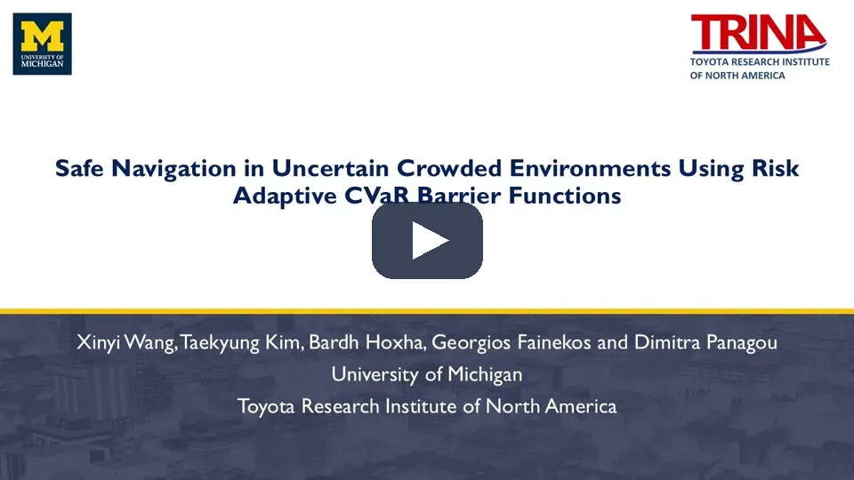
앞 장의 (2) 외부 안전 필터형이다. 제어기가 낸 명령을 barrier 조건을 만족하는 가장 가까운 명령으로 고친다. CVaR와 동적 영역 기반 barrier 함수를 결합해 위험 수준을 상황에 맞게 스스로 조절한다.
오픈소스 CasADi(qpOASES·IPOPT)로 푼다. 공식 구현의 의존성은 casadi·numpy·scipy뿐이다.
Risk Adaptive CVaR Barrier Functions (IROS 2025) · 공개 구현 Adaptive-CVaR-Barrier-Function
5 · 배경지식 · 제어 장벽 함수
CBF는 안전 집합의 경계로 다가가는 속도를 제한한다

제어 입력에 선형인 제약 하나라 작은 QP로 밀리초 안에 푼다. 안전 집합의 불변성이 보장된다.
h를 설계해야 하고 모델이 맞아야 한다. 입력 한계와 충돌하면 해가 없을 수 있다. 장애물이 많으면 합치는 법이 문제다.
5 · 제어 장벽 함수 · 시연
CBF 필터는 명령이 경계를 향해도 안전 집합을 벗어나지 않게 고친다
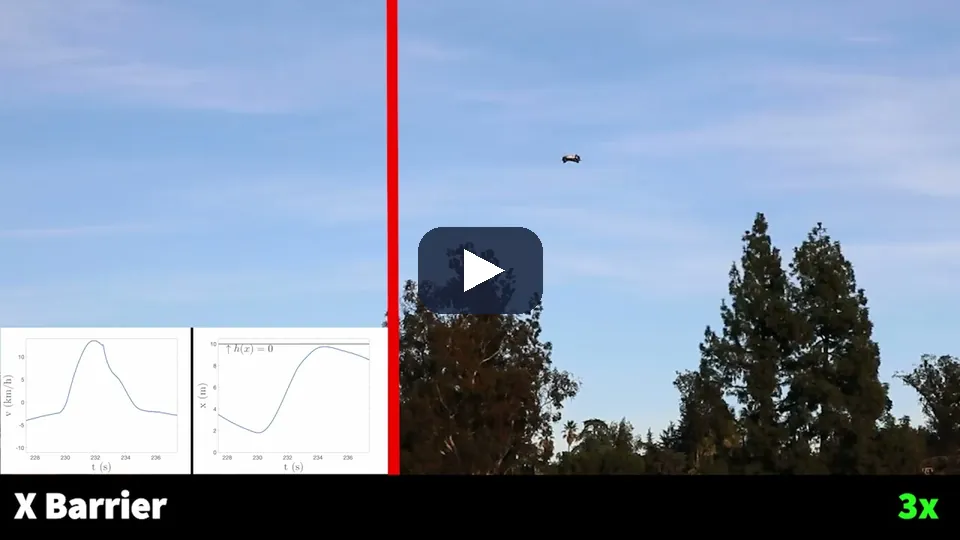
조종 명령이 경계를 향할 때 필터가 \(u_{\mathrm{nom}}\)에 가장 가까운 안전 명령으로 바꾼다(앞 장의 QP). 경계에서 멀면 빨리, 가까우면 천천히만 다가갈 수 있다.
필터도 모델과 지연이 맞아야 한다. 뒤 장의 Poisson 안전 함수는 G1에서 보행 제어기의 속도 추종 지연 때문에 \(h\)가 잠깐 음수가 됐다.
Ames 외, Control Barrier Functions: Theory and Applications, arXiv:1903.11199 · 영상: AMBER-Lab(Caltech) 채널, Singletary 외, Onboard Safety Guarantees for Racing Drones, RA-L 2022 — arXiv:2201.04331
5 · 배경지식 · 꼬리 위험
평균 비용은 드문 큰 사고를 가리고, CVaR는 나쁜 꼬리를 본다

평균만 본다. 드문 충돌을 가린다.
최악 (1−α) 꼬리의 평균. 볼록이라 최적화에 넣기 좋다.
가장 나쁜 경우. 가장 보수적이라 멈추기 쉽다.
5 · 보정
불확실성이 틀리면 확률 제약도 틀린다
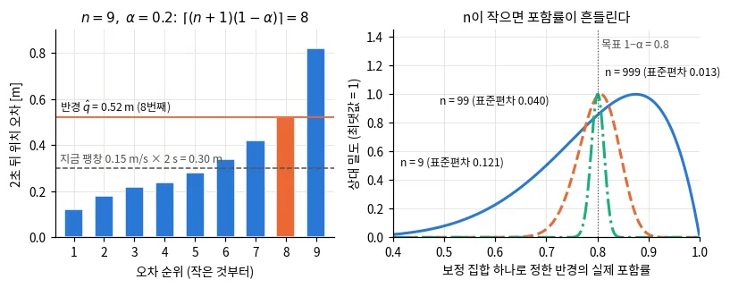
보행자 9명 성공률: Nav2 MPPI 47.83%, DRA-MPPI 50.38%, DUCCT-MPPI 77.97%. 불확실성을 실제보다 크게 잡으면 67.33%로 떨어진다(확률 희석).
CVaR 오차를 선형화보다 2.7–3.4배 줄였지만, 지도의 ±1σ 안에 드는 점은 20–21%였다(명목 68%).
원칙: σ를 제약에 쓰기 전에, σ가 실제 오차를 명목 비율만큼 덮는지부터 잰다.
DUCCT-MPPI arXiv:2605.28330 · 접촉 최댓값 전파 arXiv:2610.06103
5 · 많은 장애물 합치기
장애물마다 barrier를 soft-min으로 합치면 좁은 틈이 닫힌다
soft-min은 늘 실제 최솟값보다 작아 안전한 상태까지 뺀다. 틈 지표가 ln 2보다 작으면 soft-min 실행 1,050번 중 통과 0번. 정확한 최솟값과 δ-active set QP는 4,950번 위반 0, 대신 샘플마다 QP를 푼다.
점유 지도의 장애물 경계를 h = 0으로 두고 Poisson 방정식을 풀어 격자 전체의 매끄러운 h 하나를 얻는다. 120 × 120 격자를 GPU에서 0.2–0.3 ms. Go2·G1 실물.
핵심: 장애물이 셀 단위로 많을 때는 barrier를 하나씩 합치기보다 지도 전체에서 h 하나를 만드는 편이 틈을 지킨다.
Exact-Safe MPPI arXiv:2610.07369 · Poisson 안전 함수 arXiv:2505.06794
5 · Poisson 안전 함수 · 시연
occupancy 지도에서 Poisson 방정식으로 푼 \(h\) 하나가 Go2·G1의 CBF 필터가 된다
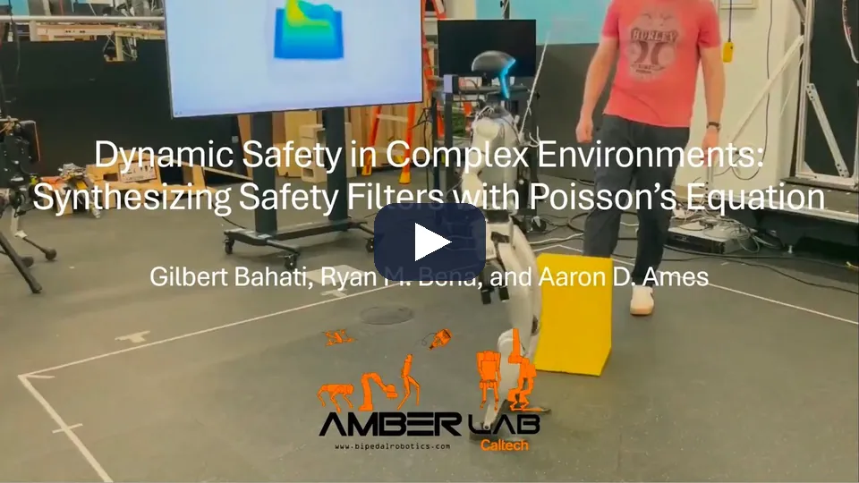
장애물 경계를 \(h = 0\)인 Dirichlet 경계로 두고 Poisson 방정식을 푼다. \(h\)는 자유 공간에서 양수, 경계에서 멀수록 크고, 기울기가 경계 근처에서도 0이 되지 않아 거리장보다 CBF로 쓰기 좋다.
GPU SOR로 120 × 120 격자를 0.2–0.3 ms에 풀고, 이전 해로 시작해 10 Hz로 갱신한다. 로봇은 단일 적분기(속도 명령)로 보고 CBF-QP를 건다.
Poisson 안전 함수, Bahati·Bena·Ames (Caltech), arXiv:2505.06794 (2025)
5 · 샘플 기반 안전 필터
안전한 샘플이 하나도 없을 때만 백업 명령으로 개입한다
- 명목 명령을 한 스텝 적용했다고 보고, 그 뒤 명령열을 샘플링한다
- 안전 = horizon 동안 위반 없음 + 끝 상태가 정지 가능한 불변 집합 안
- 안전 샘플이 없으면 저장한 백업 명령열의 첫 입력을 쓴다
- 시나리오 기법으로 "괜히 개입할" 확률에 상한을 건다
교차로 차량 3·4·5대: 필터 없이 100건 중 4·12·15건 충돌, 필터를 켜면 0건(개입률 0.08·0.21·0.38).
해석적 모델 없이 샘플로 감시. 명목 제어기를 거의 건드리지 않는다.

샘플 기반 안전 필터, arXiv:2604.22149 (2026, 시뮬레이션)
5 · 장단점
안전 방식은 지연, 보장, 의존성으로 고른다
| 방식 | 스텝당 지연 | 보장 | 장점 | 단점 |
|---|---|---|---|---|
| 시간가변 비용 | 거의 0 | 없음 | 가장 쉽다 | 가중치에 따라 뚫는다 |
| 확률 제약 MPPI(RA/DRA-MPPI) | 97–115 ms(RTX 2080) | 확률적 | 불확실성을 직접 | 보정에 기댄다, 무겁다 |
| CBF-QP | 0.6–0.8 ms | 강함(불변 집합) | 가볍고 형식적 | h 설계, 교착 |
| CVaR-BF | 미보고 | 확률적(CVaR) | 위험 수준을 스스로 조절 | 분포 가정 |
| 최악 경우 MPC | 48–200 ms | 강함(최악) | 가장 안전 | 느리고 보수적 |
실무 순서: 비용으로 시작 → 보정을 잰 뒤 확률 제약 → 가벼운 CBF 필터를 마지막 방어선으로.
DRA-MPPI arXiv:2506.21205 · RA-MPPI arXiv:2209.12842 · Risk Adaptive CVaR Barrier Functions (IROS 2025)
6 · 정리
모델을 얼마나 믿고,
무엇을 반드시 지킬 것인가
방법별 장단점 표, 고르는 법, 흔한 함정, 공부 순서.
6 · 장단점 표
제어기 계열을 한 표로 정리한다
| 계열 | 모델 | 제약 | 장점 | 단점 |
|---|---|---|---|---|
| PID | 불필요 | 없음(포화만) | 단순, 어디서나 | 다변수·미래를 모름 |
| Pure pursuit · Stanley | 기하 | 없음 | 강건한 경로 추종 | 장애물·한계 모름 |
| LQR | 선형 | 없음 | 최적 이득, 가벼운 실행 | 제약을 못 건다 |
| 선형 MPC | 선형 | 볼록 hard | 빠르고 전역 최적 | 선형 근사 |
| NMPC | 비선형 | hard | 정확한 제약 | 매끄러운 비용, 국소 최적 |
| MPPI | 아무거나 | 페널티·확률 | non-smooth 비용, GPU | 샘플 수·온도에 민감 |
| 학습 정책(RL) | 시뮬에서 | 보상으로 | 실행 매우 빠름 | 보장 없음, 분포 밖 |
| 안전 필터(CBF) | 필요 | 안전 집합 | 제어기 무관 보장 | 보수적, h 설계 |
6 · 고르는 법
질문 네 개로 제어기를 고른다
모델을 얼마나 아는가?
거의 모름 → PID·pure pursuit. 선형으로 충분 → LQR·선형 MPC. 비선형 → NMPC·MPPI. 시뮬만 있음 → RL.
반드시 지킬 제약이 있는가?
속도·조향 한계, 안전 거리 → MPC(hard) 또는 CBF 필터.
비용이 매끄러운가?
장애물 격자·충돌 판정처럼 계단이면 MPPI, 매끄러우면 NMPC.
계산 예산은?
임베디드 CPU면 LQR·PID·작은 QP, GPU가 있으면 MPPI, 아주 빠른 루프면 학습 정책.
그리고: 지연은 어느 제어기를 고르든 모델에 넣는다.
6 · 흔한 함정
제어가 이상하면 먼저 지연, 포화, 좌표, 주기를 의심한다
지연을 모른다
시뮬에서는 되는데 실물에서 출렁이면 지연부터 잰다. 명령과 실제 반응의 시간차를 로그로 본다.
포화와 windup
명령이 한계에 붙어 있으면 이득·적분이 의미를 잃는다. 한계에 붙은 시간을 센다.
좌표계·부호
몸체 좌표와 세계 좌표, 각도 범위(±π 넘김)가 섞이면 엉뚱하게 돈다.
주기와 계산 시간
계산이 주기를 넘기면 사실상 지연이 된다. 평균이 아니라 최댓값을 본다.
튜닝을 한 장면에서만
여러 지형·속도·seed에서 같은 설정으로 잰다.
추종 오차만 본다
떨림(jerk), 한계 위반, 안전 여유, 멈춤도 함께 본다.
6 · 공부 순서
고전 제어, 최적 제어, 로봇 제어 순으로 쌓는다
Åström & Murray, Feedback Systems
피드백, PID, 안정성, 주파수 응답. 저자가 온라인에 공개했다.
Rawlings·Mayne·Diehl, Model Predictive Control
LQR에서 MPC, 안정성, 강건·확률 MPC.
작은 시스템을 직접
질량-스프링 PID → 이중 적분기 LQR → 바퀴 로봇 pure pursuit → MPPI(수십 줄) → CBF-QP.
| 이 덱의 장 | 스스로 확인할 질문 |
|---|---|
| 1 고전 | 일정한 외란 앞에서 P 제어에 오차가 남는 이유는? |
| 2 MPC | receding horizon은 왜 모델 오차에 대한 피드백이 되나? |
| 3 MPPI | 온도를 올리면 무엇이 바뀌고, 비용 크기와는 어떤 관계인가? |
| 4 모델 오차 | 지연이 있으면 왜 출렁이고, 어떻게 예측으로 고치나? |
| 5 안전 | CBF는 왜 경계를 넘지 않나? σ가 틀리면 확률 제약은? |
정리
제어는 미래를 예측하고, 피드백으로 고치고, 안전은 따로 지킨다
피드백
잰 상태로 고친다. PID는 오차의 현재·과거·변화를 본다.
최적 제어
LQR은 최적 이득, MPC는 제약을 지키며 매 주기 다시 푼다.
샘플 기반
MPPI는 미분 없이 non-smooth 비용을 다룬다. 온도·잡음이 튜닝 파라미터다.
모델 오차
지연을 먼저 넣고, 남는 부분은 작은 잔차로, σ와 함께.
안전
비용으로 피하고, 필터로 지킨다. σ는 보정부터 잰다.
함정
지연, 포화, 좌표, 계산 시간의 최댓값.
참고문헌 1/2 · 먼저 읽을 것
처음에는 이 다섯 가지만 읽는다
| 순서 | 문헌 | 왜 먼저 읽나 |
|---|---|---|
| ★ 1 | Åström·Murray, Feedback Systems (2판, 2021) | 피드백, 안정성, PID의 직관 |
| ★ 2 | Rawlings·Mayne·Diehl, Model Predictive Control (2판, 2017) 1–2장 | LQR에서 MPC까지, 안정성 |
| ★ 3 | Coulter, Pure Pursuit (CMU-RI-TR-92-01, 1992) | 기하 추종기의 원형, 짧고 쉽다 |
| ★ 4 | Williams 외, MPPI 1509.01149 · IT-MPC 1707.02342 | 샘플 기반 MPC의 식과 유도 |
| ★ 5 | Ames 외, CBF: Theory and Applications 1903.11199 | 안전 필터의 개관 |
참고문헌 2/2 · 장별
책과 원 논문
책 — Åström·Murray, Feedback Systems (2판, 2021) · Rawlings·Mayne·Diehl, Model Predictive Control (2판, 2017)
추종 — Pure Pursuit (Coulter 1992) · Stanley (Thrun 외 2006)
MPPI — MPPI 1509.01149 · IT-MPC 1707.02342 · RMPPI 2102.09027 · log-MPPI 2203.16599 · SMPPI 2112.09988 · MPPI-Generic 2409.07563 · ProxPI 2609.00941
지연 — CLIS-MPPI 2610.21239 · Feedback-MPPI 2506.14855
학습 동역학 — PETS 1805.12114 · IKD 2102.12667 · RMA 2107.04034 · TD-MPC2 2310.16828 · 지형 인지 kinodynamic 모델 2305.00676 · HDVIO2.0 2504.00969 · Continual VND 2606.27353 · OptCar 2607.13319
잔차·GP — Cautious MPC 1705.10702 · McKinnon·Schoellig 1810.06681
안전 — CBF 개관 1903.11199 · RA-MPPI 2209.12842 · DRA-MPPI 2506.21205 · DUCCT-MPPI 2605.28330 · 접촉 최댓값 전파 2610.06103 · Poisson 안전 함수 2505.06794 · Exact-Safe MPPI 2610.07369 · 샘플 기반 안전 필터 2604.22149